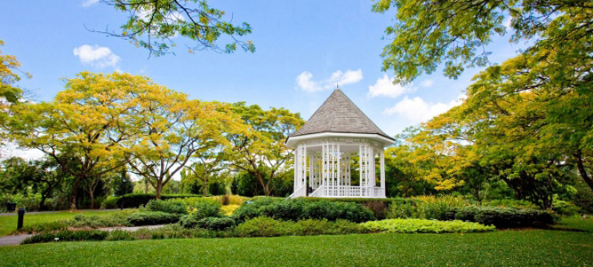
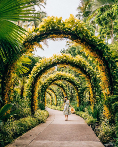
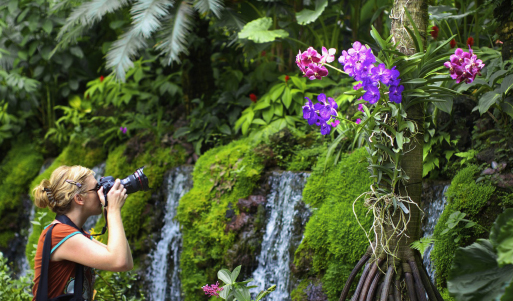
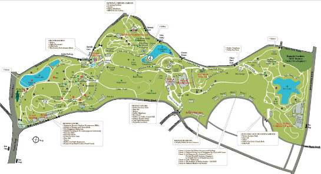
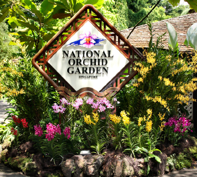
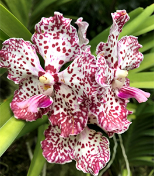
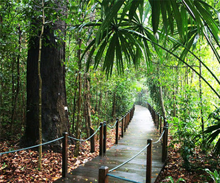
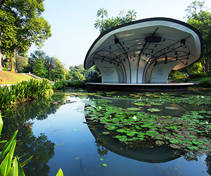

Homepage-Singapore Botanic Gardens
❧
Singapore Botanic Gardens - a walk through history
  
The Singapore Botanic Gardens is a 161-year-old tropical garden located at the fringe of Singapore's Orchard Road shopping district.
It is one of three gardens, and the only tropical garden, to be honoured as a UNESCO World Heritage Site. The Botanic Gardens was founded at its present site in 1859 by an agri-horticultural society.
It played a pivotal role in the region's rubber trade boom in the early twentieth century. The Singapore Botanic Gardens is home to more than 10,000 species of flora spreading over its 82-hectares area.
A brief history...
The first "Botanical and Experimental Garden" in Singapore was established in 1822 on Government Hill at Fort Canning by Sir Stamford Raffles, the founder of modern Singapore and a keen naturalist. The Garden's main task was to evaluate for cultivation crops which were of potential economic importance including those yielding fruits, vegetables, spices and other raw materials. This first Garden closed in 1829.
It was not until 30 years later that the present Singapore Botanic Gardens began in 1859, when the Singapore Agri-horticultural Society was granted 32 hectares of land in Tanglin by the colonial government, which had obtained it from the merchant Hoo Ah Kay, known as Whampoa, in exchange for land at Boat Quay.
Getting there...
CLICK HERE to locate us!

- Opening Hours: 5 a.m. to 12 midnight daily
- No admission fee except for National Orchid Garden
- Guided Tours are provided
   
Main Attractions
- National Orchid Gardens - The National Orchid Garden is the main attraction within the Botanic Gardens. Located on the mid-western side of the Garden, the hilly three-hectare site has a collection of more than 1,000 species and 2,000 hybrids of orchids.
- The Rainforests -The Singapore Botanic Gardens has a small tropical rainforest of around six hectares in size, which is older than the gardens itself. The rainforest and its bigger cousin at the Bukit Timah Nature Reserve are located within the Singapore's city limits. Singapore is one of the only two major cities with a tropical rainforest within its city limits, the other being Tijuca Forest in Rio de Janeiro.
- Ginger Garden - Located next to the National Orchid Garden, this one-hectare garden brings together members of the family Zingiberaceae. The garden houses a restaurant called the Halia Restaurant. There is also a drop-off point along Tyersall Avenue as well as a waterfall. The garden was officially opened in 2003 and it took over the spot vacated by the previous Orchid Enclosure.